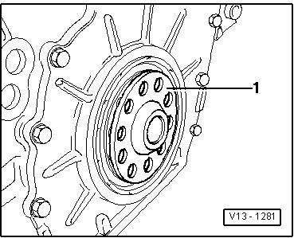

Tightening Torque & Sequences
CYLINDER HEADCylinder Head Bolt Tightening Sequence

Tighten all bolts to 30 Nm.
Then tighten bolts to 50 Nm.
Tighten all bolts (1/4 turn) (90°)
Tighten all bolts again 1/4 turn (90°)
INTAKE MANIFOLD
Intake manifold to cylinder head bolt 13 Nm
Intake manifold to support bolt 20 Nm
CAMSHAFT BEARING CAP
Camshaft Bearing Cap Nut 5 Nm + 45 degrees turn
ROD BEARING CAP
Connecting rod bearing cap 30 Nm + 1/4 turn (90°)
CRANKSHAFT PULLEY
Vibration Damper Bolt 100 Nm + 180 degrees Turn
FLYWHEEL/FLEX PLATE
Tighten drive plate on crankshaft with at least 3 old securing bolts to 30 Nm.
Measure dimension - a - using depth gauge : Specified value: 21.0 to 23.0 mm

Tighten the bolts to 60 Nm + 90° (1/4 turn) (the additional turn can be done in several steps).
OIL PUMP
Oil Pump Bolt 23 Nm
WATER PUMP
Coolant Pump bolt 9 Nm